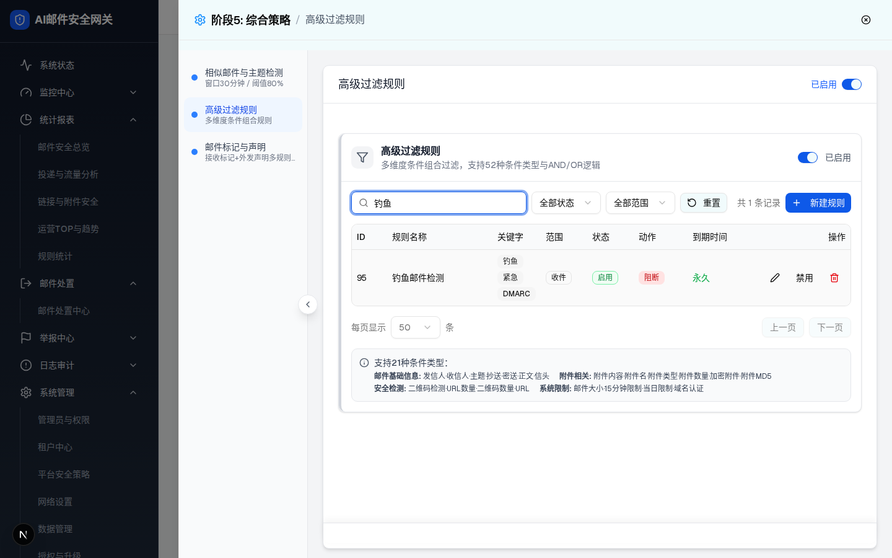
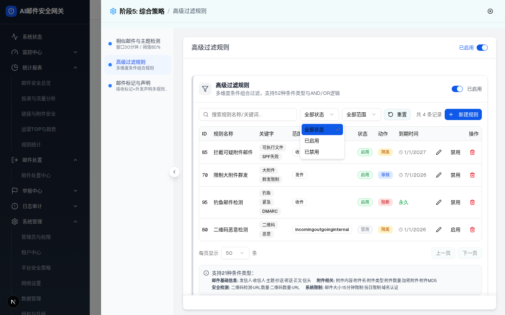
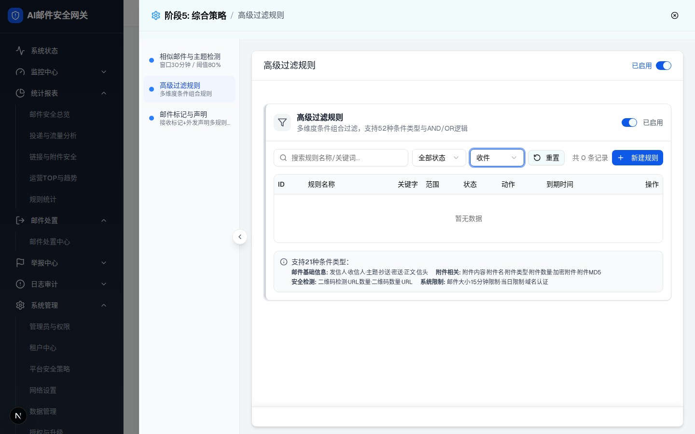
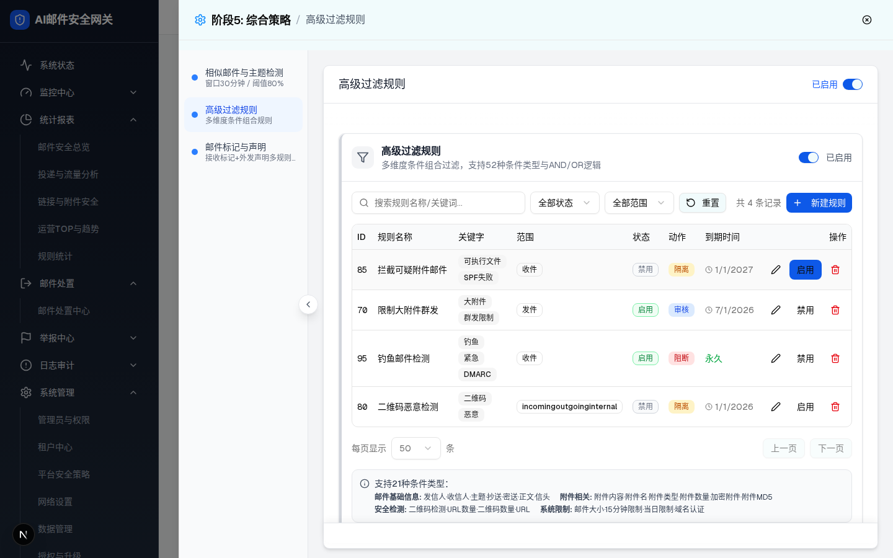
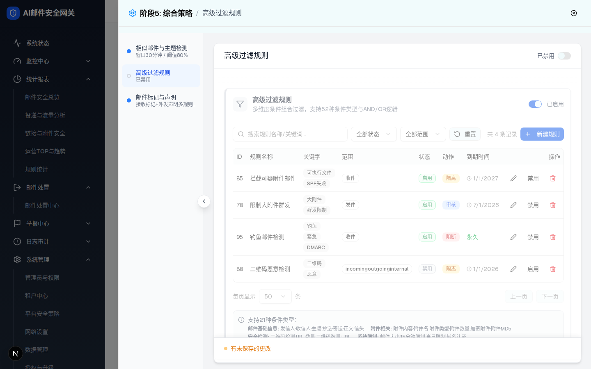
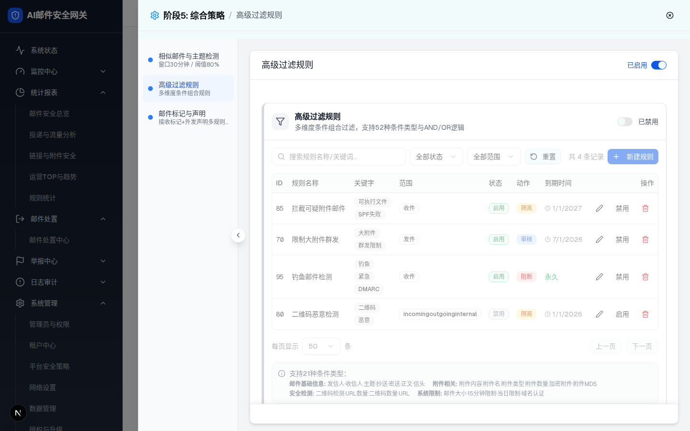

可交互组件预览
高级过滤规则
已启用
高级过滤规则
多维度条件组合过滤，支持52种条件类型与AND/OR逻辑
| ID | 规则名称 | 关键字 | 范围 | 状态 | 动作 | 到期时间 | 操作 |
|---|
每页显示 条
ⓘ 支持21种条件类型：邮件基础信息: 发信人·收信人·主题·抄送·密送·正文·信头 附件相关: 附件内容·附件名·附件类型·附件数量·加密附件·附件MD5 安全检测: 二维码检测·URL数量·二维码数量·URL 系统限制: 邮件大小·15分钟限制·当日限制·域名认证
✔ demo 行为：打开规则编辑抽屉（75vw，4 Tab）→ 见 层级 2：基础设置 Tab
⚠ 预览忠实复刻 demo 两处现状缺陷：① 描述写「52种」而底部提示写「21种」（实际 54 种，主文件 §9 D-1）；② 范围筛选选任何具体值都会「暂无数据」（scope 数组===字符串恒 false，D-4）。






